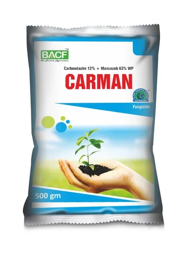

Boll Rot:

Carbendazim:
Price
600-900 rupees/kg
Carbendazim, a systemic benzimidazole fungicide, is applied repeatedly to control plant brdiseases including soilborne
diseases, over a growing season. Studies were carried out under laboratory conditions to assess the effects of repeated
carbendazim applications on its persistence and microbial community in soil.
Copper oxy chloride:
Price
1000-1200 rupees/kg
Blitox is a Broad spectrum protective fungicide against key diseases in multiple crops.
also has bactericidal properties which makes it more powerful in disease management.
It has finest particle size & better suspensibility providing better efficacy & long lasting effect on target diseases.
Blitox controls fungi resistent to other fungicides & is also helpful in resistance management.
Most effective fungicide during wet weather, rains/hailstorms